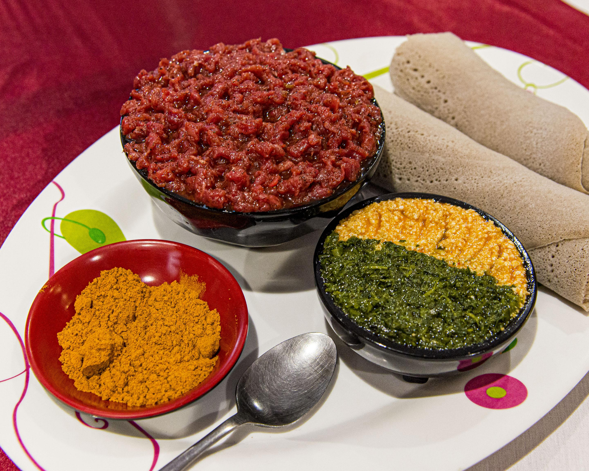

Kitfo

Do you know Kitfo?
Kitfo is a traditional Ethiopian dish that holds a special place in the country's culinary heritage. Often compared to steak tartare, it consists of finely minced raw beef seasoned with a blend of spices and clarified butter, offering a rich and flavorful experience.
Ingridents
- Beef: High-quality, lean cuts such as tenderloin are preferred. The meat is minced to a fine consistency.
- Niter Kibbeh: A spiced clarified butter infused with aromatics like garlic, ginger, and various spices, imparting a distinctive flavor to the dish.
- Spices: Mitmita, a spicy blend containing bird's eye chili, cardamom, and other spices, is commonly used. Some variations also incorporate korerima (Ethiopian cardamom) and koseret, an herb that adds a unique aroma.
Preparation
- First the niter kibbeh is melted the niter kibbeh is melted
- The minced beef is then thoroughly mixed with this spiced butter until well incorporated.
- Traditionally, kitfo is served raw, but it can also be lightly cooked upon request.
Serving Suggestions
Kitfo is typically accompanied by various sides and accompaniments:
- Injera: A sourdough flatbread made from teff flour, used to scoop up the kitfo.
- Ayib: A mild, crumbly Ethiopian cheese that balances the spiciness of the dish.
- Gomen: Steamed and seasoned collard greens, which add a complementary texture and flavor.
Home